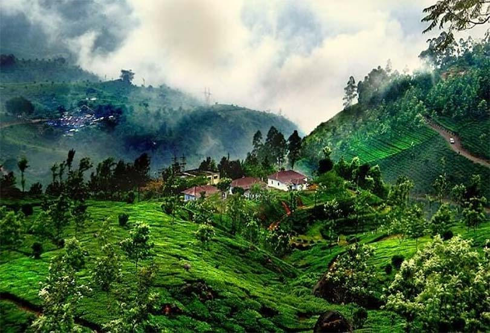
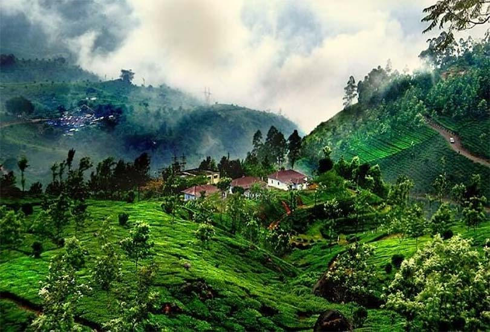

Exploring Hampi: A Journey Back in Time
Hampi, a UNESCO World Heritage Site, is filled with ancient temples and stunning landscapes...
Discover breathtaking landscapes, historical landmarks, and vibrant culture.

Experience the serene beaches, rich heritage, and famous temples of Udupi, Gokarna, and Murudeshwar.

Explore UNESCO sites like Hampi, Badami, and the adventure-filled forests of Dandeli.

Discover the beauty of Mysuru, Coorg, and Chikkamagaluru with lush hills and coffee plantations.
| Region | Main Attractions | Best Time to Visit |
|---|---|---|
| Coastal Karnataka | Gokarna, Udupi, Murudeshwar | October - March |
| North Karnataka | Hampi, Badami, Dandeli | November - February |
| South Karnataka | Mysuru, Coorg, Chikkamagaluru | September - February |
"Karnataka is a paradise! From beaches to mountains, it has it all!" - Arjun R.
"Hampi’s ruins took my breath away! A must-visit for history lovers." - Priya S.
Learn about the best travel routes, accommodations, and must-visit spots in Karnataka.

 

Hampi, a UNESCO World Heritage Site, is filled with ancient temples and stunning landscapes...
From Gokarna to Udupi, Karnataka’s coastline offers some of the most serene beach experiences...